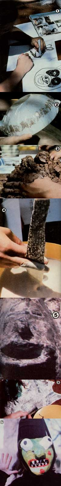

[1] Maskmakers first draw rough sketches of their proposed creations. [2] Next, each youngster covers a bowl with plastic wrap... and [3] sculpts a mold in clay for the funny face. [4] After the clay has dried, strips of newspaper are dipped in a flour/water paste and applied to the form. Six layers will produce a light-weight, durable masks. [5] The paper ""sculpture"" is set aside to dry. [6] Garish paints breathe life into a faceless demon. [7] A pint-size horrifier... ready to stalk the night.